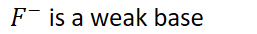
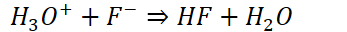

{width="8.979166666666666in" height="0.6875in"}
Solubility of these compounds is very sensitive to addition of acids and bases
{width="2.0208333333333335in" height="0.3541666666666667in"}
{width="2.0625in" height="0.3541666666666667in"}
Very similar to common-ion effect, except with hydronium/hydroxide
Example:
{width="5.28125in" height="0.34375in"}
If more hydronium is added,
Products will increase
{width="1.84375in" height="0.375in"}
{width="4.510416666666667in" height="0.3541666666666667in"}
{width="8.604166666666666in" height="0.6875in"}
{width="8.291666666666666in" height="0.3541666666666667in"}
Adding acid to salt with a weak conjugate base:
{width="4.552083333333333in" height="0.34375in"}
{width="2.6770833333333335in" height="0.3541666666666667in"}
{width="3.6145833333333335in" height="0.3333333333333333in"}
{width="6.760416666666667in" height="0.375in"}
Take note of disassociation of added soluble compounds!